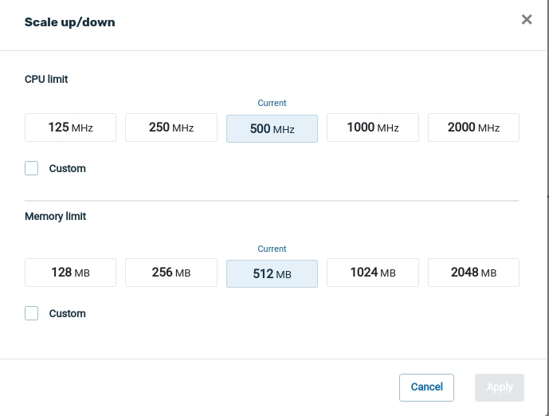
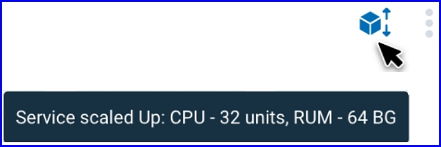
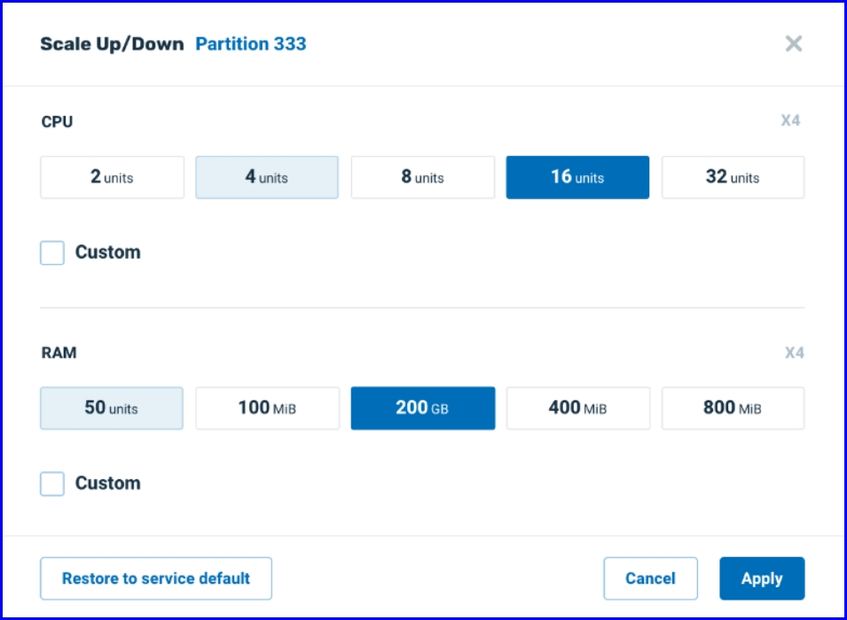
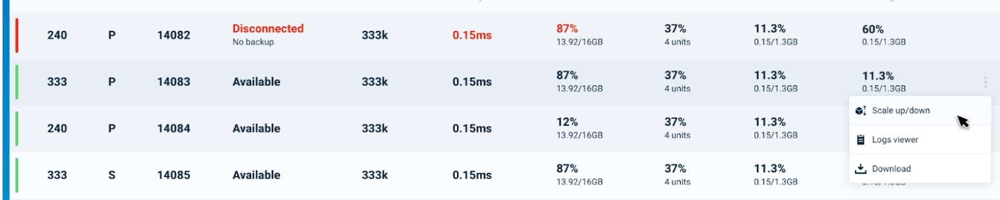

Vertical scaling, referred to as Scale Up/Scale Down and the subject of this topic, allows the amount of RAM and CPU to be increased or decreased - without downtime - for an active GigaSpaces cluster. For example, additional memory or CPUs may be added to an existing physical node.
Another form of scaling, horizontal scaling, referred to as Scale Out/Scale In, means to add or reduce the number of partitions used for an application. For example, additional partitions may be created in the same server, or alternatively, servers may be added or removed.
For an overview of both types of scaling, see
If an application expects a significant increase in resource requirements at, for example, 9 am daily, the system may be scaled up - to perhaps 20 times greater CPU capacity in the morning. Later in the day, the user will scale the system back down to its default level.
Another example is Black Friday or Digital Monday, during which the system expects marked peaks of activity. Up scaling can be performed before the expected busy period, and down scaling can be done when normal activity levels resume.
In this way, SLA/performance levels can be met consistently throughout the day.
Scaling is performed by the user on demand, at the time that they want to change the resource levels. Scaling can be performed either by entering a command in the command line, or by requesting the scaling in the Ops Manager.
Partitions can be selected for scaling in two ways:
Scale Up/Scale/Down can be performed in each of the
For all of these environments, two basic decisions are required: which partitions to scale, and how much to scale.
Regarding which partitions, the user can request that all partitions using a particular service should be scaled, or they can choose a specific partition.
Regarding the amount to scale up or down, the user chooses a value for CPUs and RAM, which will be applied to all of the partitions that are scaled.
From the Service screen for the stateful service that you wish to scale, hover over the three dots on the top of the screen, and click Scale up/down:
The Scale Up/down screen appears:

In this example, the screen provides the following information:
To choose a new number of CPUs and RAM size for all of the partitions using this service, you can click on one of the suggested CPU and RAM sizes. Alternatively, you can click the Custom checkbox to choose any value.
In this example, the user chose a new custom number of CPUs of 44, and a new RAM size of 350 MiB:
Note that the original values for CPUs and RAM are shown in light blue. You can easily go back to the original values by clicking these buttons.
Click Restore to service default if you wish to reset the values to the original values used when the service was first run.
Click Apply to accept the values shown. A confirmation screen will display:
Click Run Scale to proceed with the scaling request, or Cancel to abort the request.
The next screen shows the scaling request in progress:
The blue banner on the top of the screen is a progress indicator with messages indicating the stage of the scaling:

Note that for performance reasons, and to ensure high availability and service resilience, scaling is done in small "batches" of partitions. In this example, 100 instances are being scaled, in ten batches of ten partitions each.
When scaling completes successfully, a message is displayed:

If an error occurs, an appropriate message will display:
and the right side of the screen will show an option to display an error log:

Note that in the event that one or more of the scaling requests fails, the successful scaling requests are not undone. For a particular partition that has a scaling error (possibly caused by lack of system resources), that partition will be restored to its original settings, without any data loss.
Once the scaling request has completed, a cube-shaped icon displays on the top right of the screen. You can hover over this icon to see a brief description of the scaling result:

From the Service screen for the stateful service that you wish to scale, hover over the three dots that are on the same row as the partition instance that you wish to scale, and click Scale up/down:
In this example, the user is scaling partition number 333.
Note that you can select either the primary instance of the partition or the secondary instance. Either choice will scale the same partition.
The Scale Up/Scale Down screen will display, as discussed in <<link to Selecting Partitions by Service>> above:

Note that in this case, the particular partition number, Partition 333, is displayed on the top of the screen.
After running a scale up or scale down procedure, a log file is available with detailed information about the request.
To view the log file for a service-level scaling, ??? how???
To view the log file for a partition scale request, click on Logs viewer on the menu that appears when hovering over the three dots and one of the partition instances:

Vertical scaling is performed via the command line command of scale-vertical, which can be abbreviated to scale-v.
gs> pu scale-vertical --partitions=[partition-list] --memory=[memory-value] --cpu=[cpu-value] [processing-unit-name]Increase or decrease the memory and CPU for the partitions in a processing unit.
| Option | Description | Examples |
|---|---|---|
| partition-list |
The list of processing unit partitions to be scaled. If this parameter is omitted, all partitions will be scaled. This parameter must be omitted for a non-stateful processing unit. |
--partitions=1,2,3 |
| memory-value | The new amount of memory allocated to each partition, in units of Mebibytes. | --memory=500Mi |
| cpu-value | The new amount of CPU resources allocated to each partition, in units of millicores. One millicore is equivalent to 1/1000 of a CPU. | --cpu=5000m |
| processing-unit-name | The name of the processing unit to be scaled up or down. | myProcessingUnit |
The following example scales partitions 100 and 112 in processing unit myProcessingUnit to 800Mebibytes and 4 CPUs.
Note that if a partition initially had a lower value for these parameters, then this is considered a scale up operation for that partition; otherwise it is a scale down operation.
pu scale-vertical --partitions=100,112 --memory=800Mi --cpu=4000m myProcessingUnit
xxxxxxxxxxxxx
.